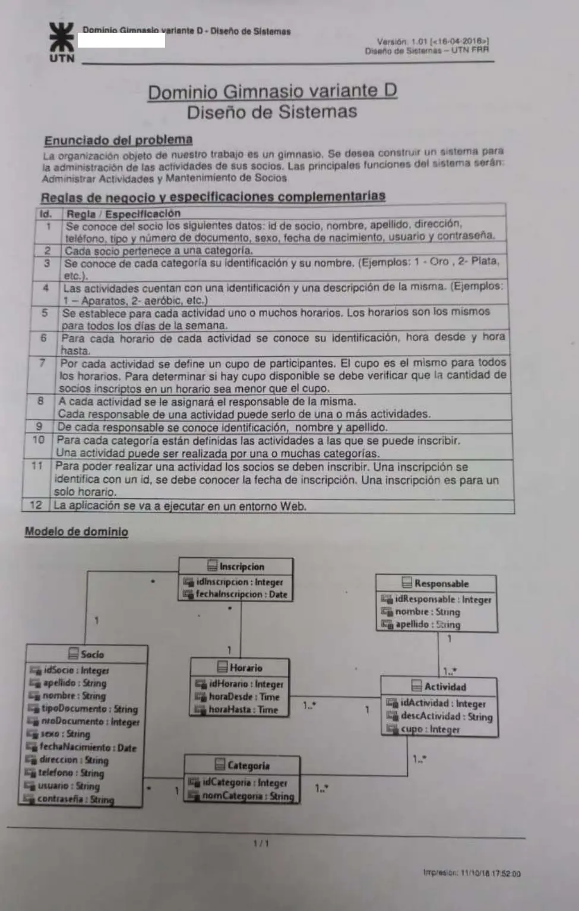
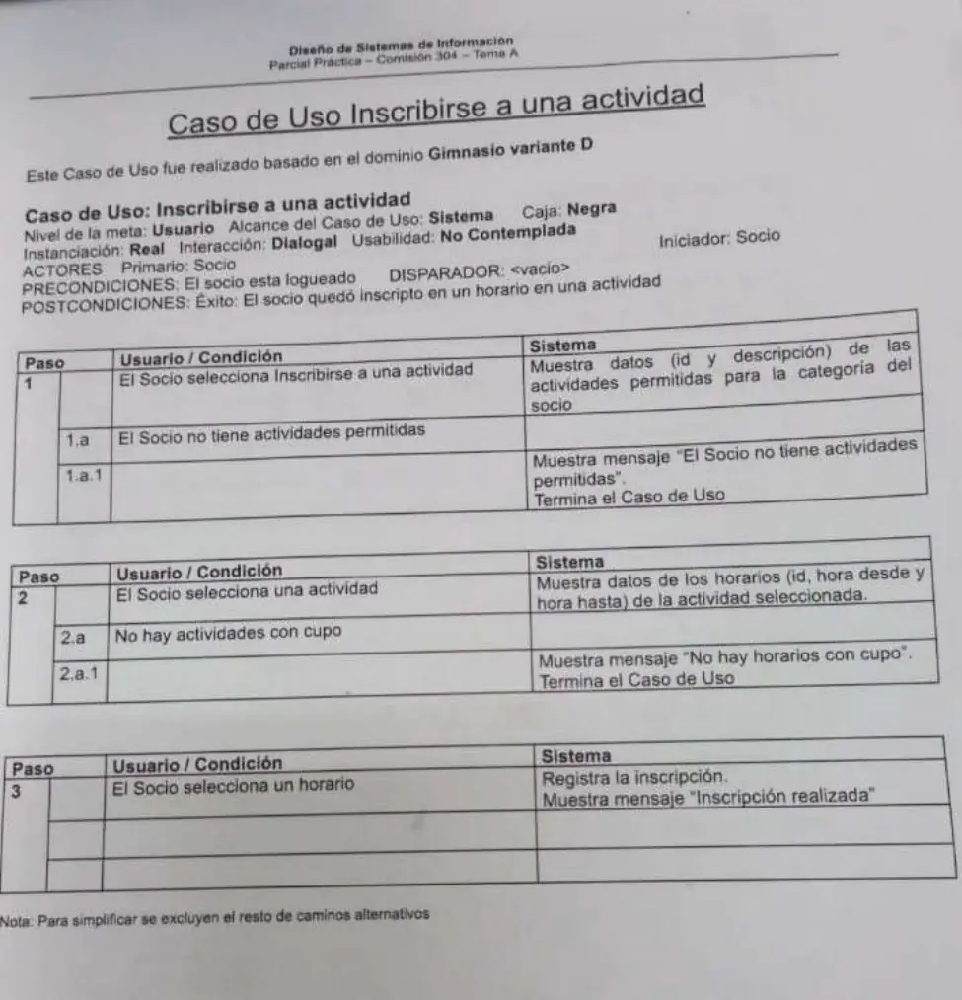

1° parcial práctica, 5/07/2024: Gimnasio
1° parcial, 05/07/2024
Enunciado




Propuesta de respuesta
Respuesta no verificada. La propuso Luta Studios con inteligencia artificial y ningún docente la revisó. Puede tener errores.
Un DSD por cada paso del caso de uso y el DCD, como piden las Políticas. La notación copia la de las soluciones de referencia del Drive, Pedido de repuestos y Pedido de juguete. La UI va sin caja de activación, el controlador guarda en variables de instancia lo que usa en otro paso, el create() va punteado y sin caja, y los retornos van entre «». Tocá cada dibujo para verlo en pantalla completa.
DSD 1. Paso 1, mostrar las actividades permitidas
DSD 2. Paso 2, seleccionar una actividad
DSD 3. Paso 3, seleccionar un horario
DCD
Por qué así
- Controlador.
ControladorInscribirseActividadrecibe los tres eventos y delega. GuardaaActualyhActualporque los usa en el paso siguiente, ysActuales el socio logueado de la precondición, comocActualen Pedido de juguete. - Experto. Las actividades permitidas las conoce la categoría del socio (regla 10). Si hay cupo lo sabe el horario, que cuenta sus inscripciones con
size()y lo compara con el cupo de la actividad (regla 7). - Creador. El horario registra sus inscripciones, por eso crea la
Inscripcion(regla 11, una inscripción es para un solo horario). - DAO.
getOnepara traer la actividad y el horario elegidos, y unsavepara la inscripción creada. El DAO no cuenta inscripciones, porque no hace cálculos. - Lo que cambia con el parcial del 7/07/2023. Es el mismo dominio y casi el mismo caso de uso. Acá el paso 3 solo muestra «Inscripción realizada», así que no hacen falta el responsable ni sus
get.
Respuesta no verificada. Puede tener errores.
Se armó con el 1° parcial, «La práctica», con las reglas de las Políticas para el DSD, el DCD y los DAO, y las soluciones de referencia de Pedido de repuestos y Pedido de juguete.
Quedó en duda: El paso 2 dice «muestra los horarios de la actividad seleccionada» sin «que tengan cupo», pero el 2.a habla de cupo. Acá se muestran solo los horarios con cupo. El dominio no dice quién conoce a quién. Acá el horario guarda sus inscripciones para poder contarlas; si tu comisión prefiere que solo la inscripción conozca al horario, el conteo necesita otra forma. Tampoco está claro si alcanza con guardar la inscripción o hay que guardar también el horario, que cambió su colección. El save de la inscripción lleva la nota de número generado porque el dominio da idInscripcion y no dice cómo se asigna. La notación sigue las soluciones de referencia de Pedido de repuestos y Pedido de juguete, que no dicen si son de la cátedra.
¿Cómo te fue?
Marcá cada tema del examen.
- DSDReglas para el DSD, en 1° parcial
- DCDReglas para el DCD, en 1° parcial